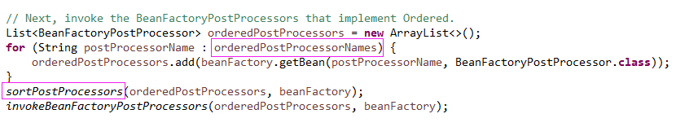

原文连接:https://www.cnblogs.com/lixinjie/p/taste-spring-011.html
上一篇文章介绍了对@Configuration类的处理逻辑，这些逻辑都写在ConfigurationClassPostProcessor类中。
这个类不仅是一个“bean工厂后处理器”，还是一个“bean定义注册后处理器”。
这其实是两个接口，它们都是来操作bean定义。所以非常重要。
换句话说，能操作bean定义的，也只有这两个接口，你说重要不重要。
查看下类型信息，在整个Spring中确实只有这两个接口，如下图01：
虽然它们都是进行和bean定义相关的操作，但目的却是明显不同的。
bean定义注册后处理器，就是用来向容器中注册bean定义的，造成的结果就是bean定义的数目变多。
如下图02：
它的接口方法执行的时机是，所有的“常规bean定义”都已注册完毕，该方法允许添加进一步的bean定义注册到容器中。
编程新说注：这里的“常规bean定义”指的是，在容器refresh前就已经注册好的bean定义。
bean工厂后处理器，就是用来修改容器中的bean定义的，造成的结果就是bean定义的数目不变。
如下图03：
它的接口方法执行的时机是，所有的bean定义都已经注册完毕，不可能再增多了，该方法允许去修改bean定义的一些属性。
后处理器除了可以作为bean定义注册到容器中之外，还可以自己new出实例来，手动添加到容器中（此时不注册bean定义）。
在容器的抽象类AbstractApplicationContext中，如下图0405：
接下来就开始在refresh方法中调用后处理器了，如下图06：
继续随着方法走，如下图07：
可见有一个代理类专门来负责调用后处理器方法，其中第二个参数就是我们手动添加的后处理器实例（一般情况下没有人添加，所以为空）。
在程序中，很多时候“顺序”都是一个非常重要的事情，相同的代码，执行顺序不同，可能就是不同的结果或报错。
在Spring中，对顺序的处理是有统一的方案的，就是接口或注解。
首先是Ordered接口，如下图08：
使用一个int类型的值表示顺序，很简单。
需要注意的是，优先级最高的却是负数最小值，优先级最低的却是正数最大值。即数值越小优先级越高。
然后是PriorityOrdered接口，如下图09：
它只是继承了Ordered接口，啥也没做。从名字就能看出来该接口的优先级比Ordered接口要高。
接着是@Order注解，如下图10：
从Spring4.1开始，标准的Java注解@javax.annotation.Priority，可以作为临时替代使用，如下图11：
在具体使用时，同一类组件最好保持风格统一，都使用接口，或都使用注解。
还有一种情况需要注意，就是对于既没有实现接口也没有标注解的类，会给它一个默认的顺序值。
一般情况下是0或最大值或最小值。就是处在中间位置，或优先级最低，或优先级最高。
下面开始具体调用这些后处理器，有好几个方面的顺序问题：
1）先调用手动添加的后处理器，再调用作为bean定义注册的后处理器
2）先调用bean定义注册后处理器，再调用bean工厂后处理器
3）先调用注册bean定义的接口方法，再调用修改bean定义的接口方法
4）先调用实现PriorityOrdered接口的，再调用实现Ordered接口的，最后是没有实现接口的
整个调用过程分为很多步进行：
第一步，先调用手动添加的bean定义注册后处理器的注册bean定义方法，如下图12：
第二步，再调用容器中实现PriorityOrdered接口的bean定义注册后处理器的注册bean定义方法，如下图13：
第三步，再调用容器中实现Ordered接口的bean定义注册后处理器的注册bean定义方法，如下图14：
第四步，再通过循环调用容器中剩余所有的bean定义注册后处理器的注册bean定义方法，如下图15：
编程新说注：
此处为什么要通过循环一直调用呢？因为这是在注册bean定义，而且注册的bean定义可能又是一个bean定义注册后处理器。
这很好理解，就像买饮料遇到再来一瓶一样的道理。
你买了10瓶，全部打开，有8个再来一瓶，老板又给了你8瓶，再全部打开，有5个再来一瓶，老板再给你5瓶，你接着再打开。
如此反复，直到没有遇到再来一瓶为止。
截止到目前，所有注册bean定义的方法都已经调完，这意味着bean定义注册已经完毕，bean定义的数目不会再增多了。
第五步，调用所有bean定义注册后处理器的修改bean定义方法，按需对bean定义进行修改或完善，执行顺序和上面保持一致，如下图16：
截止到目前，所有的bean定义注册后处理器接口已经全部调用完毕。接下来该调用bean工厂后处理器了。
第六步，调用手动添加的bean工厂后处理器的修改bean定义方法，如下图17：
第七步，调用容器中实现PriorityOrdered接口的bean工厂后处理器的修改bean定义方法，如下图18：
编程新说注：
可以看到这里的写法和上面不太一样，上面每次都从容器中获取，是因为bean定义的数量一直在增加。
现在bean定义数量不会再变了，从容器中获取一次即可，一个循环就可以按实现的接口不同把它们分开。
第八步，调用容器中实现Ordered接口的bean工厂后处理器的修改bean定义方法，如下图19：

第九步，调用容器中没有实现接口的bean工厂后处理器的修改bean定义方法，如下图20：
因为没有实现接口，所以这一步不用排序。
截止到现在，所有的bean定义都已经修改完毕。bean定义的属性不会再有任何变化了。
总结一下：
本文介绍了两个“后处理器”接口，一个用于注册bean定义，一个用于修改bean定义。
这也是Spring中仅有的两个能够操作bean定义的接口。所以它们非常重要。
然后它们的调用顺序也很重要，如先注册bean定义，才能修改bean定义。
还有对PriorityOrdered接口和Ordered接口，以及没有接口的应用。
对bean定义注册后处理器采用类似“再来一瓶”的调用方式。因为新增加的bean定义可能还是这种类型的。
对bean工厂后处理器采用普通的调用方式，因为bean定义数量不再变化。
截止到目前，所有的bean定义已经全部就绪，等待着进入下一个阶段。
（END）
>>> 品Spring系列文章 <<<
品Spring：SpringBoot和Spring到底有没有本质的不同？
品Spring：SpringBoot轻松取胜bean定义注册的“第一阶段”
品Spring：SpringBoot发起bean定义注册的“二次攻坚战”
品Spring：注解之王@Configuration和它的一众“小弟们”
>>> 热门文章集锦 <<<
爸爸又给Spring MVC生了个弟弟叫Spring WebFlux
【面试】吃透了这些Redis知识点，面试官一定觉得你很NB（干货 | 建议珍藏）
【面试】如果你这样回答“什么是线程安全”，面试官都会对你刮目相看（建议珍藏）
【面试】迄今为止把同步/异步/阻塞/非阻塞/BIO/NIO/AIO讲的这么清楚的好文章（快快珍藏）
【面试】一篇文章帮你彻底搞清楚“I/O多路复用”和“异步I/O”的前世今生（深度好文，建议珍藏）
作者是工作超过10年的码农，现在任架构师。喜欢研究技术，崇尚简单快乐。追求以通俗易懂的语言解说技术，希望所有的读者都能看懂并记住。下面是公众号和知识星球的二维码，欢迎关注！